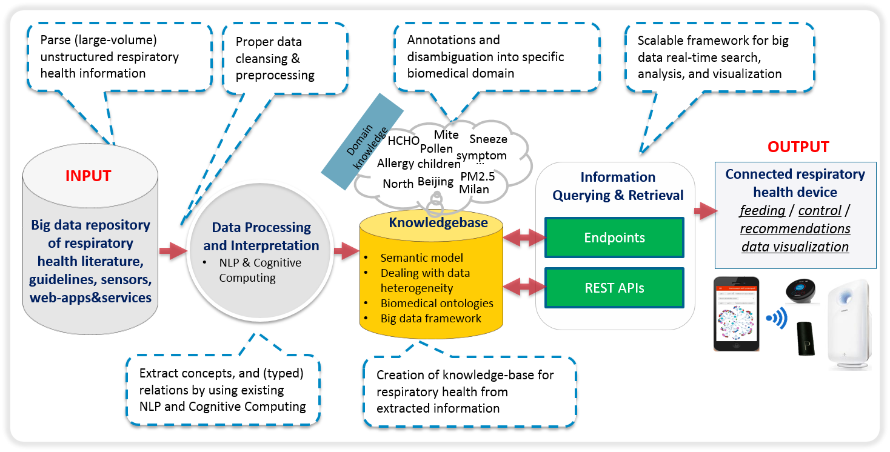

In this short contribution we describe our currently ongoing work on a system which is able to automatically retrieve relevant content on respiratory health from scientific papers and standard guidelines, in order to feed and provide recommendations to a connected respiratory health device.
Introduction
The availability of abundant computation and storage resources combined with the evolution of analytics has made affordable the adoption of Artificial Intelligence (AI) technology in healthcare, which is a sector particularly characterized by a vast amount of data coming from different sources (Dessí et al., 2017b). The idea is to use AI algorithms to improve healthcare by saving time, money and life. In particular, extracting information about medication and symptoms from clinical documents has proved beneficial in prediction and diagnosis of diseases (Champion et al., 2014). Despite clinical documents are being widely used for future analysis and diagnosis, it is challenging to extract useful information from within clinical documents. In this context, the use of Semantic Web technologies (Berners-Lee et al., 2001). allows abstraction and generalization of unstructured medical documents, enabling us to infer features that have a relevant role or meaning into a structured content. The application of Natural Language Processing (NLP), data mining, and advanced text analytics into advanced AI systems for healthcare can assist physicians in diagnosing and faster decision making. They can optimize, for example, patient selection for clinical trials through intelligent matching, assist in the creation of individualized treatment plans in oncology that enhance patient experience (Dessí et al., 2017b).
The underlying idea is that a machine can process more information than a physician and potentially discover links and patterns not immediately visible at a first glance or that would require a complete overview of all possible interventions. An example of this is Watson, the popular question-answering (Q&A) machine by IBM, which has been recently employed to provide diagnosis and treatments to cancer patients, enabling faster and better care for patients (Dessí et al., 2017a; Gantenbein, 2014). It can analyse the meaning and context of structured and unstructured data coming from a variety of inputs including handwriting documents (Dessí et al., 2017a), and derive data from various sources including curated literature and rationales, as well as medical journals and textbooks. Watson derives high-level features such as concepts, emotions, entities, keywords, relations, etc. from unstructured data, and uses advanced machine learning algorithms to derive analytics, generate predictions and hypotheses, and address question answering tasks. A recent interesting use of IBM Watson in the medical domain can be found in the joint-venture between IBM and Anthem, known as WellPoint, which aims to improve patient care by using the power of IBM Watson into medical platforms for identifying the most likely diagnosis and treatment options for Anthem patients (Gantenbein, 2014).
The respiratory health medical sector can leverage from this novel AI technologies as well. In this paper we show our currently on-going research work on the application of Semantic Web technologies on a curated repository of selected medical documents in order to be able to extract knowledge from these data and to build a thorough knowledge-base in the respiratory health domain.
Description of the system
We are currently working on a system which is able to semantically mine information from scientific literature and clinical guidelines to extract new knowledge on respiratory health domain. The goal is to feed and control connected respiratory health devices according the gathered knowledge and provide intuitive visualization interfaces for user understanding. The schematic workflow of the system is illustrated in . The system is able to parse, extract, transform and load the unstructured information coming as input from different clinical guidelines and scientific papers provided as input.

Pipeline illustrating the main elements of the system .
By using internal NLP tooling (Datla et al., 2016; Hasan et al., 2015), the system is able to structure the free-format text using machine reading from natural language processing for extracting RDF/OWL graphs that are linked to the Linked Open Data cloud and compliant to Semantic Web and Linked Data patterns (Mongiovì et al., 2016). In this way the information is translated into machine-readable semantic information in RDF/OWL format, which is a W3C standard for exchanging semantic data (Consoli et al., 2015). Machine reading is typically less accurate than human reading, but it can process massive amounts of text in reasonable time, detect regularities hardly noticeable by humans, and its results can be reused by machines for applied tasks. Our system is able to recognize and resolve named entities, to link them to the existing knowledge base, providing a baseline for different semantic reasoning tasks (Mongiovì et al., 2015; Mongiovì et al., 2016).
In this way the system recognizes the main entities and concepts, and most importantly, it performs relation extraction to derive the main relationships among them (Presutti et al. 2016). The main focus indeed is to extract the relationships among the obtained conceptual entities and link air pollution exposure to symptoms exacerbations for at risk target groups. Using named entity recognition (NER) and resolution (a.k.a. entity linking) with standard biomedical ontologies in the respiratory health domain, the system makes sure to restrict the extraction of the structured information within the respiratory health domain of interest only. Biomedical ontologies ensure as well both syntactic and semantic interoperability among all heterogeneous data coming into the system (Gangemi et al., 2009).
A controlled prototype experiment of relation extraction in the respiratory health domain from a small set of scientific papers and clinical guidelines as input has produced the extraction of 3,929 relationships among extracted concepts in the biomedical domain. As an example, consider the following sentence: During the last 10 years, asthma has become generally recognized as characterized by inflammation of the bronchi.The following concepts and relations are extracted:
subject
relation
object
Asthma
"generally recognize"
"Bronchi"
Asthma
"generally recognize"
" Inflammation"
"adult organism"
"hasAttribute"
"Asthma"
Concepts and relations extracted for the example
Each subject and object entry represents the label associated to, respectively, the related subject and object concepts from standard biomedical ontologies. In our example:
Each concept in the ontology is uniquely identified by is corresponding URI, which conveys other undirected information coming from the ontology, relations to other concept and its position in the hierarchy, and most important, it allows disambiguation among terms and linking concepts together to ensure syntactic as well semantic interoperability. The extracted data leverage the respiratory health knowledgebase, which is updated periodically by the system with the new, updated information coming from its input sources.
Data access and consumption
We are developing user-friendly access services to allow users to access the produced knowledge. Data and ontology are accessible by SPARQL queries through a dedicated Virtuoso triplestore. The SPARQL endpoint is also accessible as a REST web service, requiring as input a user-defined SPARQL query and producing as output the query result in text/html, text/rdf +n3, application/xml, application/json, or application/rdf+xml. Data are also accessible through content negotiation, either via a web browser (in this case the output type is always text/html), or by making HTTP REST requests specifying as input the object identifier. We also provide different user-oriented visualization tools to provide the description of elements of the ontology and to allow the user to explore the ontology and to customize the visualization. One possible visualization is via WebVOWL which provides as a force-directed graph layout. We also integrate LodLive, a navigator of RDF resources based on a graph layout. It is used for connecting RDF browser capabilities with the effectiveness of data graph representation. For instance it allows the user to expand automatically the relations of a selected resource, calculate inverse and owl:sameAs relations, store images during the navigation, and geo-localize the browsed data, if needed. , on the left, shows for example the LodLive visualization of the relationships among the Asthma concept and some of the other concepts extracted from the input data sources related to the respiratory health domain of interest.
The relationships can be also explored by interactive chord diagrams for visualizations (Holten, 2006). A chord diagram is a graphical method of displaying the inter-relationships between data in a matrix. The data is arranged radially around a circle with the relationships between the points typically drawn as arcs connecting the data together. When a specific concept is selected interactively, only its relationships are visualized in the diagram, helping users to grasp and understand more intuitively the inter-relationships among the different entities. The format of chord diagrams is aesthetically pleasing, making it a popular choice in the world of data visualization (Holten, 2006). For example, , on the right, shows the chord graph highlighting the relationships of the extracted concept Dust, i.e. concept http://purl.bioontology.org/ontology/MESH/D004391 from the Medical Subject Headings ontology, related to Asthma, with the other extracted concepts.
Left: LodLive visualization of the relationships of the “Asthma” concept and other extracted concepts; Right: Chord graph showing the relationships of the concept “Dust” with the other extracted concepts.
Summary and Outlook
In this short contribution it has been described our currently ongoing work related to the development of an AI system which is able to automatically retrieve relevant content on respiratory health from scientific papers and standard guidelines. The system may be used to feed in real-time a connected respiratory health device to provide feedbacks and recommendations, and to optimally control it by linking, e.g., respiratory health symptoms and illnesses, and user specific health conditions. We aim to deploy the system on real connected respiratory health devices to help transforming them towards modern innovative products.
References
Berners-Lee, T., Hendler, J. and Lassila, O. (2001). The Semantic Web, Scientific American, pp. 29-37
Champion, H., Pizzi, N. and Krishnamoorthy, R. (2014). Tactical clinical text mining for improved patient characterization. In 2014 IEEE International Congress on Big Data, pp. 683-690.
Consoli, S. and Reforgiato Recupero, D. (2015). Using FRED for Named Entity Resolution, Linking and Typing for Knowledge Base Population. In F. Gandon, E. Cabrio, M. Stankovic, and A. Zimmermann (Eds.), Communications in Computer and Information Science, volume 548, pp. 40-50. Springer-Verlag, New York
Datla, V. V., Hasan, S. A., Liu, L., Benajiba, Y., Lee, K., Qadir, A., Prakash, A., Farri, O. (2016). Open Domain Real-Time Question Answering Based on Semantic and Syntactic Question Similarity. TREC 2016
Dessí, D., Fenu, G., Reforgiato Recupero, D., and Consoli, S. (2017). Exploration of IBM Watson for Healthcare Applications, Philips Research Europe Technical Note, PR-TN 2017/00115, Eindhoven The Netherlands
Dessí, D. Reforgiato Recupero, D., Fenu, G. and Consoli, S. (2017). Exploiting Cognitive Computing and Frame Semantic Feature Engineering for Biomedical Document Clustering. Proceedings of the Workshop on Semantic Web solutions for large-scale biomedical data analytics (SeWeBMeDA) at the ESWC2017, Portoroz, Slovenia, CEUR Workshop Proceedings.
Gantenbein, R. E. (2014). Watson, come here! The role of intelligent systems in health care. In 2014 World Automation Congress (WAC) (pp. 165-168). IEEE.
Hasan, S. A., Zhu, X., Liu, J., Barra, C. M., Oliveira, L., and Farri, O. (2015). Ontology-Driven Semantic Search for Brazilian Portuguese Clinical Notes. MedInfo 2015: 1022
Holten, D. (2006). Hierarchical Edge Bundles: Visualization of Adjacency Relations in Hierarchical Data. IEEE Transactions on Visualization and Computer Graphics, 12 (5).
Mongiovì, M., Reforgiato Recupero, D., Gangemi, A., Presutti, V., and Consoli, S. (2016). Merging Open Knowledge Extracted from Text with MERGILO. Knowledge-Based Systems, 108, 155-167
Mongiovì, M., Reforgiato Recupero, D., Gangemi, A., Presutti, V., Nuzzolese, A.G. and Consoli, S. (2015). Semantic reconciliation of knowledge extracted from text through a novel machine reader. Proceedings of the 8th International Conference on Knowledge Capture (K-CAP 2015), article num. 25, ACM, New York
Gangemi A., and Presutti V. (2009). Ontology Design Patterns. In S. Staab and R. Studer, editors, Handbook on Ontologies, 2nd Edition. Springer Verlag.
Presutti, V., Nuzzolese, A.G., Consoli, S., Gangemi, A., and Reforgiato Recupero, D. (2016). From hyperlinks to Semantic Web properties using Open Knowledge Extraction. Semantic Web Journal, 7(4), 351-378